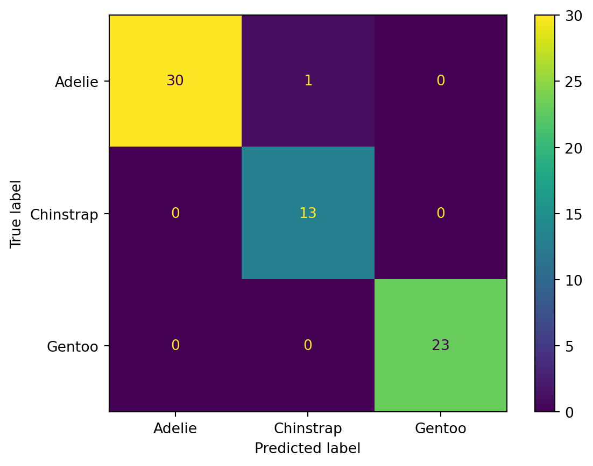
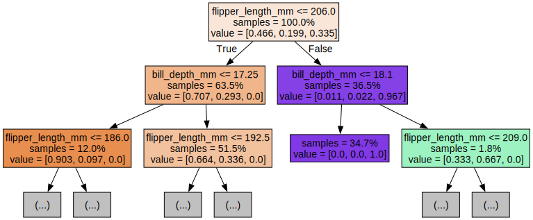
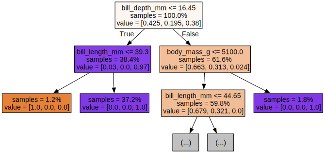
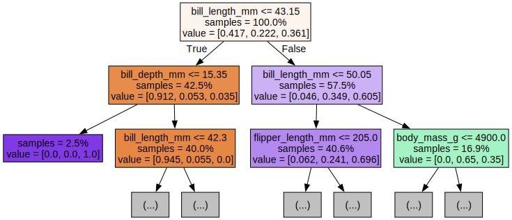

This is a blog post demonstrating the concept of classification in machine learning.
Classification
code
Author
Jonathan West
Published
November 24, 2023
Introduction
Classification is an important concept in machine learning. It is used to predict the class of a given data point, or in other words assign an observation to a predefined group, based on the features of that observation. In this blog post, we will jump into the concept of classification and how to carry it out on a dataset.
If you have followed along in other blog posts on this site, you will likely have seen the concepts of regression and clustering. Classification is similar to both of these concepts, but it differs in some major ways. The goal of regression is to predict continuous numerical values, whereas the goal of classification is to predict discrete values. However, they are both forms of supervised learning, where we have a set of labeled data to use to create our model, before applying it to new data. On the other hand, clustering is a form of unsupervised learning, where we have a set of unlabeled data, and we are trying to find patterns in the data. Like clustering, classification entails finding patterns in the data and grouping similar data points together. However, we will be using predefined labeled groups rather than trying to find the groups ourselves.
Let’s load a dataset to conduct classification work on.
# Load the penguins dataset from the seaborn libraryimport seaborn as snspenguins = sns.load_dataset("penguins")penguins.head()
species
island
bill_length_mm
bill_depth_mm
flipper_length_mm
body_mass_g
sex
0
Adelie
Torgersen
39.1
18.7
181.0
3750.0
Male
1
Adelie
Torgersen
39.5
17.4
186.0
3800.0
Female
2
Adelie
Torgersen
40.3
18.0
195.0
3250.0
Female
3
Adelie
Torgersen
NaN
NaN
NaN
NaN
NaN
4
Adelie
Torgersen
36.7
19.3
193.0
3450.0
Female
print(f"Number of observations: {penguins.shape[0]}")
Number of observations: 344
penguins.isna().sum()
species 0
island 0
bill_length_mm 2
bill_depth_mm 2
flipper_length_mm 2
body_mass_g 2
sex 11
dtype: int64
As shown above, there are some none-numerical values in the dataset, and there are some missing values. We will need to deal with these before we can carry out classification work on the dataset. Let’s drop the rows that have missing values.
penguins = penguins.dropna()penguins.isna().sum()
species 0
island 0
bill_length_mm 0
bill_depth_mm 0
flipper_length_mm 0
body_mass_g 0
sex 0
dtype: int64
print(f"Number of observations: {penguins.shape[0]}")
Number of observations: 333
As you can see, we have cut the number of observations from 344 to 333, and removed any rows with missing values. Now we will continue on with our classification work.
Types of classification
There are several different classification algorithms that we can use to classify our data. Some of the most common ones include linear classifiers, tree-based classifiers, and neural network classifiers. In this blog post we will be trying two specific algorithms: support vector machines and random forests. We will be using the scikit-learn library to carry out our classification work.
Random forests are a type of tree-based classifier, which use multiple decision trees to classify data, which helps improve accuracy and reduce overfitting.
Support vector machines (SVM) are a type of linear classifier, which find a hyperplane that best separates data into different classes while maximizing the margin between the hyperplane and the data points. SVMs are a very popular classification algorithm, and they are used in both linear and non-linear classification problems. We will start with support vector machines.
SVM classification
import pandas as pdfrom sklearn.model_selection import train_test_splitfrom sklearn.preprocessing import LabelEncoderfrom sklearn.svm import SVCfrom sklearn.metrics import classification_report, confusion_matrix, accuracy_score# Replace categorical target variable with numerical valueslabel_encoder = LabelEncoder()penguins["species_encoded"] = label_encoder.fit_transform(penguins["species"])# Obtain separate feature and target sets (X and y)y = penguins["species_encoded"]X = penguins.drop(["species", "species_encoded"], axis=1)
As you can see, we have done some basic preprocessing on the dataset, including converting the target variable to numberical values. Next we need to deal with the categorical variables in the dataset. We will use label encoding to convert the sex feature into numerical values, because this can simply be done for binary or naturally ordinal variables. However, the island variable is not binary nor does it follow a naturally ordinal state, so to keep it in without creating false relationships in the data we would likely want to use one-hot encoding. One-hot encoding essentially entails creating a new binary column for each possible value of the categorical variable, and assigning a 1 or 0 to each observation depending on which value it has for that variable. However in this case we will simply drop the island variable from the dataset.
penguins["sex_encoded"] = label_encoder.fit_transform(penguins["sex"])X = penguins.drop(["species", "species_encoded", "island", "sex"], axis=1)# Split the dataset into training and testing setsX_train, X_test, y_train, y_test = train_test_split(X, y, test_size=0.2, random_state=42)X.head()
bill_length_mm
bill_depth_mm
flipper_length_mm
body_mass_g
sex_encoded
0
39.1
18.7
181.0
3750.0
1
1
39.5
17.4
186.0
3800.0
0
2
40.3
18.0
195.0
3250.0
0
4
36.7
19.3
193.0
3450.0
0
5
39.3
20.6
190.0
3650.0
1
We have now finished our data preprocessing work, and splitting up our training and testing sets. Now we can create our SVM classifier and fit it to the training data.
# Create an SVM classifiersvm_classifier = SVC(kernel='linear')# Fit the classifier on the training datasvm_classifier.fit(X_train, y_train)# Make predictions on the test datay_pred = svm_classifier.predict(X_test)# Evaluate performanceaccuracy = accuracy_score(y_test, y_pred)conf_matrix = confusion_matrix(y_test, y_pred)print("Accuracy:", accuracy)print("Confusion Matrix:\n", conf_matrix)print(classification_report(y_test, y_pred))
As we can see from the results above, our SVM classifier has an accuracy of 0.99, which is quite good. Let’s help visualize the results by creating a confusion matrix.
import sklearn.metricsimport matplotlib.pyplot as pltconf_mat_display = sklearn.metrics.ConfusionMatrixDisplay(confusion_matrix=conf_matrix, display_labels=penguins["species"].unique())conf_mat_display.plot()plt.show()

As we can see from the confusion matrix, our SVM classifier did a very good job of classifying the data, with only a single false positive. The model predicted a Chinstrap penguin as an Adelie penguin, but that was the only failure in the dataset.
Although this worked quite well already, let’s try another classification algorithm to see how the results compare.
Random forest classification
As mentioned before, we are going to apply a random forest classification to the data to see how it compares to the SVM classifier. Random forest classification works by creating multiple decision trees, and then using the mode of the predictions of the individual trees as the final prediction. We already did preprocessing on the data and split it into training and testing sets, so we can simply create a new classifier and fit it to the training data.
from sklearn.ensemble import RandomForestClassifier# Create a Random Forest classifierrandom_forest_classifier = RandomForestClassifier(n_estimators=100, random_state=42)# Fit the classifier on the training data & make predictionsrandom_forest_classifier.fit(X_train, y_train)y_pred = random_forest_classifier.predict(X_test)# Evaluate performanceaccuracy = accuracy_score(y_test, y_pred)conf_matrix = confusion_matrix(y_test, y_pred)print("Accuracy:", accuracy)print("Confusion Matrix:\n", conf_matrix)print(classification_report(y_test, y_pred))
This classifier also did a great job, even beating out the SVM in terms of accuracy. For this relatively simple dataset, random forest classifcation was able to achieve 100% accuracy on our testing data.
Lastly, lets create another visualization of the classification, this time visualizing the first three trees of our random forest classifier.
from sklearn.tree import export_graphvizfrom IPython.display import Imageimport graphvizfor i inrange(3): tree = random_forest_classifier.estimators_[i] dot_data = export_graphviz(tree, feature_names=X_train.columns, filled=True, max_depth=2, impurity=False, proportion=True) graph = graphviz.Source(dot_data) display(graph)



These decision trees show how for a given feature, the tree splits the data into two groups based on the value of that feature, and narrows down the possible classes for each group. By combining the results of multiple trees, random forest classification is able to achieve a more comprehensive classification than a single decision tree.
Conclusion
In this blog post, we delved into the concept of classification in machine learning. We looked at the difference between classification and the concepts of regression and clustering, and we looked at some different types of classification. We then worked on a real use case of classification algorithms. I hope that this blog post has been helpful in understanding classificaiton in machine learning, and encourages you to continue with your own work in this area.
---title: "Classification"author: "Jonathan West"date: "2023-11-24"categories: [Classification, code]description: "This is a blog post demonstrating the concept of classification in machine learning."format: html: code-tools: true---## IntroductionClassification is an important concept in machine learning.It is used to predict the class of a given data point, or in other words assign an observation to a predefined group, based on the features of that observation.In this blog post, we will jump into the concept of classification and how to carry it out on a dataset.If you have followed along in other blog posts on this site, you will likely have seen the concepts of regression and clustering. Classification is similar to both of these concepts, but it differs in some major ways. The goal of regression is to predict continuous numerical values, whereas the goal of classification is to predict discrete values. However, they are both forms of supervised learning, where we have a set of labeled data to use to create our model, before applying it to new data.On the other hand, clustering is a form of unsupervised learning, where we have a set of unlabeled data, and we are trying to find patterns in the data. Like clustering, classification entails finding patterns in the data and grouping similar data points together. However, we will be using predefined labeled groups rather than trying to find the groups ourselves.Let's load a dataset to conduct classification work on.```{python}# Load the penguins dataset from the seaborn libraryimport seaborn as snspenguins = sns.load_dataset("penguins")penguins.head()``````{python}print(f"Number of observations: {penguins.shape[0]}")``````{python}penguins.isna().sum()```As shown above, there are some none-numerical values in the dataset, and there are some missing values. We will need to deal with these before we can carry out classification work on the dataset. Let's drop the rows that have missing values.```{python}penguins = penguins.dropna()penguins.isna().sum()``````{python}print(f"Number of observations: {penguins.shape[0]}")```As you can see, we have cut the number of observations from 344 to 333, and removed any rows with missing values. Now we will continue on with our classification work.## Types of classificationThere are several different classification algorithms that we can use to classify our data. Some of the most common ones include linear classifiers, tree-based classifiers, and neural network classifiers. In this blog post we will be trying two specific algorithms: support vector machines and random forests. We will be using the scikit-learn library to carry out our classification work.Random forests are a type of tree-based classifier, which use multiple decision trees to classify data, which helps improve accuracy and reduce overfitting.Support vector machines (SVM) are a type of linear classifier, which find a hyperplane that best separates data into different classes while maximizing the margin between the hyperplane and the data points. SVMs are a very popular classification algorithm, and they are used in both linear and non-linear classification problems. We will start with support vector machines.## SVM classification```{python}import pandas as pdfrom sklearn.model_selection import train_test_splitfrom sklearn.preprocessing import LabelEncoderfrom sklearn.svm import SVCfrom sklearn.metrics import classification_report, confusion_matrix, accuracy_score# Replace categorical target variable with numerical valueslabel_encoder = LabelEncoder()penguins["species_encoded"] = label_encoder.fit_transform(penguins["species"])# Obtain separate feature and target sets (X and y)y = penguins["species_encoded"]X = penguins.drop(["species", "species_encoded"], axis=1)```As you can see, we have done some basic preprocessing on the dataset, including converting the target variable to numberical values.Next we need to deal with the categorical variables in the dataset. We will use label encoding to convert the `sex` feature into numerical values, because this can simply be done for binary or naturally ordinal variables. However, the island variable is not binary nor does it follow a naturally ordinal state, so to keep it in without creating false relationships in the data we would likely want to use one-hot encoding.One-hot encoding essentially entails creating a new binary column for each possible value of the categorical variable, and assigning a 1 or 0 to each observation depending on which value it has for that variable. However in this case we will simply drop the island variable from the dataset.```{python}penguins["sex_encoded"] = label_encoder.fit_transform(penguins["sex"])X = penguins.drop(["species", "species_encoded", "island", "sex"], axis=1)# Split the dataset into training and testing setsX_train, X_test, y_train, y_test = train_test_split(X, y, test_size=0.2, random_state=42)X.head()```We have now finished our data preprocessing work, and splitting up our training and testing sets. Now we can create our SVM classifier and fit it to the training data.```{python}# Create an SVM classifiersvm_classifier = SVC(kernel='linear')# Fit the classifier on the training datasvm_classifier.fit(X_train, y_train)# Make predictions on the test datay_pred = svm_classifier.predict(X_test)# Evaluate performanceaccuracy = accuracy_score(y_test, y_pred)conf_matrix = confusion_matrix(y_test, y_pred)print("Accuracy:", accuracy)print("Confusion Matrix:\n", conf_matrix)print(classification_report(y_test, y_pred))```As we can see from the results above, our SVM classifier has an accuracy of 0.99, which is quite good.Let's help visualize the results by creating a confusion matrix.```{python}import sklearn.metricsimport matplotlib.pyplot as pltconf_mat_display = sklearn.metrics.ConfusionMatrixDisplay(confusion_matrix=conf_matrix, display_labels=penguins["species"].unique())conf_mat_display.plot()plt.show()```As we can see from the confusion matrix, our SVM classifier did a very good job of classifying the data, with only a single false positive. The model predicted a Chinstrap penguin as an Adelie penguin, but that was the only failure in the dataset. Although this worked quite well already, let's try another classification algorithm to see how the results compare. ## Random forest classificationAs mentioned before, we are going to apply a random forest classification to the data to see how it compares to the SVM classifier.Random forest classification works by creating multiple decision trees, and then using the mode of the predictions of the individual trees as the final prediction.We already did preprocessing on the data and split it into training and testing sets, so we can simply create a new classifier and fit it to the training data.```{python}from sklearn.ensemble import RandomForestClassifier# Create a Random Forest classifierrandom_forest_classifier = RandomForestClassifier(n_estimators=100, random_state=42)# Fit the classifier on the training data & make predictionsrandom_forest_classifier.fit(X_train, y_train)y_pred = random_forest_classifier.predict(X_test)# Evaluate performanceaccuracy = accuracy_score(y_test, y_pred)conf_matrix = confusion_matrix(y_test, y_pred)print("Accuracy:", accuracy)print("Confusion Matrix:\n", conf_matrix)print(classification_report(y_test, y_pred))``````{python}conf_mat_display = sklearn.metrics.ConfusionMatrixDisplay(confusion_matrix=conf_matrix, display_labels=penguins["species"].unique())conf_mat_display.plot()plt.show()```This classifier also did a great job, even beating out the SVM in terms of accuracy. For this relatively simple dataset, random forest classifcation was able to achieve 100% accuracy on our testing data.Lastly, lets create another visualization of the classification, this time visualizing the first three trees of our random forest classifier.```{python}from sklearn.tree import export_graphvizfrom IPython.display import Imageimport graphvizfor i inrange(3): tree = random_forest_classifier.estimators_[i] dot_data = export_graphviz(tree, feature_names=X_train.columns, filled=True, max_depth=2, impurity=False, proportion=True) graph = graphviz.Source(dot_data) display(graph)```These decision trees show how for a given feature, the tree splits the data into two groups based on the value of that feature, and narrows down the possible classes for each group. By combining the results of multiple trees, random forest classification is able to achieve a more comprehensive classification than a single decision tree.# ConclusionIn this blog post, we delved into the concept of classification in machine learning.We looked at the difference between classification and the concepts of regression and clustering, and we looked at some different types of classification. We then worked on a real use case of classification algorithms. I hope that this blog post has been helpful in understanding classificaiton in machine learning, and encourages you to continue with your own work in this area.## Sources used1. https://github.com/ageron/handson-ml3/tree/main2. https://scikit-learn.org/stable/modules/generated/sklearn.metrics.ConfusionMatrixDisplay.html3. https://www.datacamp.com/tutorial/svm-classification-scikit-learn-python4. https://www.datacamp.com/tutorial/random-forests-classifier-python5. https://www.geeksforgeeks.org/random-forest-classifier-using-scikit-learn/